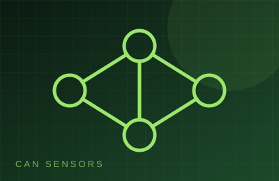
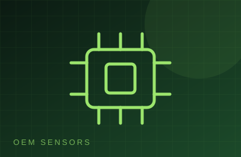
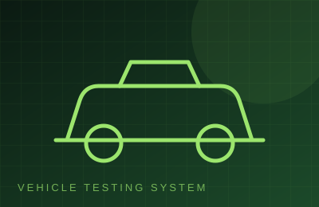
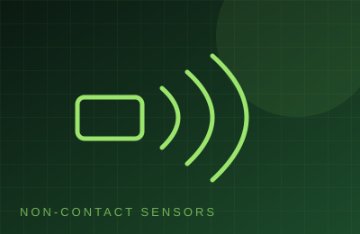

Sensors, instruments and vehicle test systems from Aaron Instruments.
Precision transducers that convert physical parameters into reliable electrical signals for accurate measurement and monitoring.
Request details →
CAN-based sensors delivering accurate real-time measurement and seamless communication with vehicle and industrial control systems.
Request details →
Customised OEM sensor solutions engineered for reliable integration, precise measurement and demanding automotive applications.
Request details →
Vehicle testing systems for evaluating performance, durability, safety and functional characteristics under real-world conditions.
Request details →
High-precision non-contact sensing for accurate measurement of position, speed, distance, temperature and other critical parameters.
Request details →
Sound and vibration measurement solutions for analysing noise, resonance, vibration levels and dynamic product performance.
Request details →
Precision instruments and signal amplifiers for dependable signal conditioning, measurement, data acquisition and testing.
Request details →Tell us what you need to automate or test. We will study the requirement and propose a practical solution.